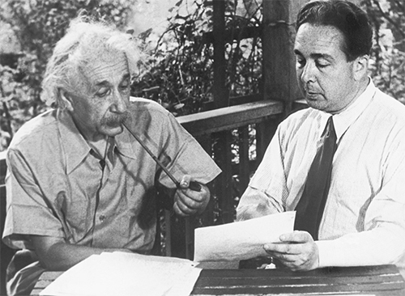

Cùng Leó Szilárd tiếp tục trao đổi (vào năm 1946) về cuộc họp năm 1939
Leó Szilárd, một nhà vật lý người Hungary có sức cuốn hút và hơi lập dị, là bạn cũ của Einstein. Khi còn sống ở Berlin vào những năm 1920, họ đã cộng tác phát triển một loại tủ lạnh mới được cấp bằng sáng chế nhưng lại bán không chạy. Sau khi chạy trốn Đức Quốc xã, Szilárd tìm đường tới nước Anh và sau đó là New York, ở đây ông làm việc tại Đại học Columbia, nghiên cứu các cách tạo ra phản ứng dây chuyền hạt nhân, một ý tưởng mà ông đã thai nghén khi đứng chờ đèn giao thông ở London vài năm trước đó. Khi nghe nói đến phát hiện phân hạch sử dụng uranium, Szilárd nhận ra rằng nguyên tố đó có thể được dùng để tạo ra phản ứng dây chuyền có khả năng gây nổ.
Szilárd thảo luận về khả năng này với bạn thân của mình là Eugene Wigner, một nhà vật lý cũng là dân tị nạn từ Budapest, và cả hai bắt đầu lo người Đức có thể tìm cách mua hết các nguồn cung cấp uranium từ Congo, lúc đó đang là thuộc địa của Bỉ. Nhưng làm thế nào, họ tự hỏi, hai người tị nạn Hungary ở Mỹ có thể cảnh báo người Bỉ? Thế rồi Szilárd nhớ ra tình cờ làm sao Einstein lại là bạn của Hoàng Thái hậu nước đó.
Mùa hè năm 1939, Einstein lúc này đang nghỉ tại một ngôi nhà nhỏ mà ông thuê ở khu ngã ba sông, mũi phía bắc của vùng đông Long Island; nếu đi từ làng Hamptons, ta sẽ phải đi ngang qua Vịnh Peconic thì mới tới được. Ở đây ông lái hiếc thuyền nhỏ Tinef của mình, mua đôi xăng-đan từ tiệm tạp hóa địa phương và chơi nhạc của Bach với ông chủ cửa hàng.
“Chúng tôi biết Einstein đang ở đâu đó trên Long Island nhưng không rõ là ở đâu,” Szilárd nhớ lại. Vì vậy, ông gọi điện tới văn phòng của Einstein ở Princeton và được biết ông đang thuê nhà của một ông tiến sỹ Moore nào đó ở làng Peconic. Ngày Chủ nhật, 16 tháng Bảy năm 1939, Szilárd và Wigner lên đường thực hiện sứ mệnh của mình, Wigner là người lái (Szilárd, cũng như Einstein, không biết lái xe).
Nhưng khi đến nơi, họ không thể nào tìm được ngôi nhà, và dường như chẳng ai biết Tiến sỹ Moore là ai. Khi họ đã sẵn sàng bỏ cuộc thì Szilárd thấy một cậu bé đứng bên lề đường. “Cháu có vô tình biết Giáo sư Einstein sống ở đâu không”? Giống như phần lớn những người trong thị trấn, kể cả những người không biết Tiến sỹ Moore là ai, cậu bé biết Einstein ở đâu và dẫn họ tới một ngôi nhà nhỏ nằm gần cuối đường Old Grove, tại đó Einstein đang đăm chiêu suy nghĩ.
Ngồi bên chiếc bàn gỗ trên hàng hiên của ngôi nhà chỉ có vài món đồ, Szilárd giải thích về quá trình các neutron được giải phóng từ sự phân hạch hạt nhân có thể tạo ra phản ứng dây chuyền gây nổ trong uranium bồi graphite như thế nào. “Tôi chưa bao giờ nghĩ đến chuyện này!” Einstein nói xen vào khi Szilárd giải thích. Ông hỏi một số câu, kiểm tra lại quá trình này trong 15 phút rồi sau đó nhanh chóng hiểu được các hệ quả của nó. Thay vì viết thư cho Hoàng Thái hậu, Einstein đề nghị, có lẽ họ nên viết cho một bộ trưởng của Bỉ mà ông quen.
Là người khéo hành xử, Wigner đề nghị rằng có lẽ ba người tị nạn không nên viết thư cho một chính phủ nước ngoài về các vấn đề an ninh tuyệt mật mà không hỏi qua ý kiến của Bộ Ngoại giao. Họ cũng quyết định, dù làm theo cách nào thì có lẽ kênh thích hợp là một lá thư của Einstein, người duy nhất trong số họ đủ danh tiếng để được chú ý, gửi tới Đại sứ Bỉ, cùng với một bức thư giải thích gửi tới Bộ Ngoại giao. Với kế hoạch trong đầu, Einstein thảo nội dung bằng tiếng Đức. Wigner dịch ra tiếng Anh và đưa cho thư ký đánh máy, rồi sau đó gửi bức thư cho Szilárd.
Vài ngày sau, một người bạn thu xếp cho Szilárd nói chuyện với Alexander Sachs, một nhà kinh tế học đang làm việc tại tập đoàn Lehman Brothers và là bạn của Tổng thống Roosevelt. Là người có phần khôn ngoan hơn ba nhà vật lý lý thuyết, Sachs quả quyết rằng bức thư phải được gửi thẳng tới Nhà trắng và ông đề nghị mình sẽ chuyển tận tay.
Đó là lần đầu tiên Szilárd gặp Sachs, nhưng kế hoạch táo bạo của ông này thật hấp dẫn. “Thử cách này chẳng thể hại gì đâu,” Szilárd viết cho Einstein. Họ có nên nói chuyện qua điện thoại hay gặp nhau trực tiếp để sửa lại bức thư không? Einstein đáp, Szilárd nên ghé lại Peconic.
Vào thời điểm đó, Wigner đã đi thăm California. Vì vậy Szilárd nhờ một người bạn khác trong nhóm nhà khoa học tị nạn người Hungary, nhà vật lý lý thuyết Edward Teller, vừa làm lái xe vừa làm người đồng hành khoa học. “Tôi tin rằng lời khuyên của anh ta rất có giá trị, hơn nữa tôi cũng nghĩ rằng ông có thể muốn biết anh ta. Đó là người đặc biệt tử tế,” Szilárd nói với Einstein. Một điểm cộng khác nữa là Teller có một chiếc xe Plymouth lớn đời 1935. Và thế là, một lần nữa Szilárd lại lên đường đi Peconic.
Szilárd mang cho ông bản thảo gốc được soạn hai tuần trước đó, nhưng Einstein nhận ra rằng họ đang chuẩn bị viết một bức thư quan trọng hơn nhiều so với bức thư đề nghị các bộ trưởng của Bỉ cẩn thận với việc xuất khẩu uranium của Congo. Nhà khoa học nổi tiếng nhất thế giới sắp nói với tổng thống Hoa Kỳ rằng ông nên bắt đầu suy nghĩ về một loại vũ khí có sức mạnh gần như không thể tưởng tượng nổi, có khả năng giải phóng năng lượng nguyên tử. Szilárd nhớ lại: “Einstein đọc nội dung thư bằng tiếng Đức cho Teller ghi, tôi sử dụng văn bản tiếng Đức đó làm cơ sở để chuẩn bị hai bản thảo cho bức thư gửi Tổng thống.”
Theo những ghi chép của Teller, bản thảo được Einstein đọc cho ông chép không chỉ nêu lên vấn đề về uranium của Congo, mà còn giải thích khả năng của phản ứng dây chuyền, gợi ý rằng theo đó người ta có thể tạo ra một loại bom mới, và thúc giục ngài Tổng thống liên hệ chính thức với các nhà vật lý đang nghiên cứu về đề tài này. Sau đó, Szilárd đã viết và gửi lại cho Einstein hai lá thư: một bản dài 45 dòng và một bản dài 25 dòng, cả hai đều đề ngày 2 tháng Tám năm 1939 “để Einstein chọn bản mà ông vừa ý nhất”. Einstein ký vào cả hai bản bằng kiểu chữ ký nhỏ, khác với chữ ký hoa mỹ mà ông thỉnh thoảng dùng.
Bản dài hơn, bản cuối cùng tới tay Roosevelt, có nội dung như sau:
Thưa Ngài:
Một công trình gần đây của E. Fermi và L. Szilárd, mà tôi đã đọc bản thảo, làm tôi thấy rằng nguyên tố uranium có thể được biến thành một nguồn năng lượng mới và quan trọng trong tương lai rất gần. Những khía cạnh nhất định của tình huống đã xuất hiện này dường như đòi hỏi sự theo dõi sát sao, và nếu cần, hành động kịp thời từ cấp quản lý. Bởi vậy, tôi tin rằng bổn phận của tôi là làm Ngài chú ý tới những sự kiện và khuyến cáo sau đây:
… Người ta có thể tạo một phản ứng dây chuyền hạt nhân trong một khối lượng lớn uranium, mà từ đó năng lượng khổng lồ và nhiều nguyên tố mới tựa radium sẽ được sinh ra. Giờ thì gần như chắc chắn rằng người ta có thể đạt được điều này trong tương lai không xa.
Hiện tượng mới này cũng có thể dẫn tới việc chế tạo bom, và có thể hình dung – dù với mức độ chắc chắn thấp hơn nhiều – rằng người ta có thể tạo ra một loại bom mới có sức tàn phá cực lớn. Một quả bom loại này, khi được chở trên tàu và cho nổ ở một cảng, rất có thể sẽ phá hủy toàn bộ khu cảng đó cùng với một số khu vực xung quanh…
Xét theo tình hình này, có thể Ngài nên nghĩ đến việc duy trì mối liên hệ lâu dài nào đó giữa chính quyền và nhóm các nhà vật lý đang nghiên cứu về phản ứng hạt nhân dây chuyền ở Hoa Kỳ.
Bức thư kết thúc với lời cảnh báo rằng có thể các nhà khoa học người Đức đang tìm cách chế tạo loại bom này. Khi viết xong thư và ký tên, họ vẫn phải tìm người thích hợp nhất có thể chuyển bức thư đến tay Tổng thống Roosevelt. Einstein không chắc chắn về Sachs. Thay vào đó, họ nghĩ tới nhà tài phiệt Bernard Baruch và Hiệu trưởng Học viện Công nghệ Massachusetts, Karl Compton.
Bất ngờ là khi gửi lại bản đánh máy bức thư, Szilárd lại đề xuất nên nhờ Charles Lindbergh, người nổi tiếng nhờ chuyến bay một mình vượt Đại Tây Dương 12 năm trước, chuyển bức thư. Cả ba người Do Thái tị nạn này rõ ràng không biết gì đến chuyện người phi công kia từng có thời gian ở Đức, năm trước đó mới được tướng Hermann Goring của Đức Quốc xã tặng huân chương danh dự quốc gia, và lúc này đang trở thành người theo chủ nghĩa biệt lập208, đối lập với Roosevelt.
Cách đó vài năm, Einstein đã có cuộc gặp ngắn với Lindbergh tại New York, vì vậy ông viết một bức thư giới thiệu gửi kèm bức thư đã ký tên cho Szilárd. Einstein viết cho Lindbergh: “Tôi muốn nhờ anh giúp tôi tiếp đón bạn của tôi là Tiến sỹ Szilárd và suy nghĩ thật kỹ về điều anh ta sẽ nói với anh. Với một người không làm trong lĩnh vực khoa học, vấn đề anh ta đưa ra có thể nghe kỳ quái. Tuy nhiên, chắc chắn anh sẽ bị thuyết phục về việc cần theo dõi sát sao một khả năng được nêu ra ở đây vì lợi ích công.”
Lindbergh không trả lời, vì vậy ngày 13 tháng Chín, Szilárd viết cho ông ta một bức thư nhắc, một lần nữa đề nghị xin gặp. Hai ngày sau, họ nhận ra rằng mình đã sai lầm đến mức nào khi Lindbergh có một bài phát biểu trên sóng phát thanh toàn quốc. Đó là lời kêu gọi chủ trương biệt lập. Lindbergh mở lời: “Định mệnh của đất nước này không đòi chúng ta phải tham gia các cuộc chiến ở châu Âu.” Đan xen trong đó là những ẩn ý cho thấy Lindbergh thân Đức và thậm chí cả một số hàm ý bài Do Thái khi nhắc đến việc người Do Thái sở hữu hãng truyền thông. Ông ta nói: “Chúng ta phải hỏi ai là người sở hữu và gây ảnh hưởng đến báo chí, hình ảnh tin tức và đài phát thanh. Nếu người dân của chúng ta biết được sự thật thì đất nước của chúng ta có thể sẽ không tham chiến.”
Bức thư tiếp theo của Szilárd gửi cho Einstein nêu ra điều mà lúc này ai cũng thấy: “Lindbergh không phải là người của ta.”
Hy vọng khác của họ là Alexander Sachs, người đã được giao cho một bức thư chính thức có chữ ký của Einstein để gửi Roosevelt. Mặc dù bức thư này rõ ràng là vô cùng quan trọng nhưng Sachs không có cơ hội nào để chuyển nó đi trong gần hai tháng.
Đến lúc đó, các sự kiện đã biến bức thư quan trọng này trở thành bức thư cấp thiết. Cuối tháng Tám năm 1939, Đức quốc xã và Liên Xô đã khiến cả thế giới sững sờ bằng việc ký một hiệp ước đồng minh chiến tranh và tiến hành xà xẻo Ba Lan. Điều này đẩy Anh và Pháp vào thế phải tuyên chiến, khơi mào cuộc Chiến tranh Thế giới Thứ hai của thế kỷ. Tại thời điểm này, Mỹ vẫn giữ thế trung lập hay chí ít là không tuyên chiến. Tuy nhiên, chính phủ Mỹ quả thật đã bắt đầu tái vũ trang và phát triển các loại vũ khí mới cần thiết cho sự can dự trong tương lai.
Cuối tháng Chín, Szilárd đến gặp Sachs và kinh hoàng phát hiện rằng ông ta vẫn chưa thể thu xếp lịch gặp Roosevelt. Szilárd viết cho Einstein: “Có một khả năng thấy rõ là Sachs sẽ không có ích gì cho chúng ta. Wigner và tôi đã quyết định thống nhất với ông ta là sẽ chờ thêm 10 ngày nữa.” Sachs thiếu chút nữa là không đáp ứng được thời hạn. Buổi chiều thứ tư ngày 11 tháng Mười, Sachs được đưa vào Phòng bầu dục mang theo lá thư của Einstein, bản ghi nhớ của Szilárd và bản tóm tắt 800 từ của chính ông này.
Tổng thống vui mừng chào đón ông ta: “Alex, anh tới đây làm gì thế?”
Sachs là người có thể nói như khướu, có lẽ vì thế người giúp việc cho Tổng thống khiến ông khó xin được cuộc hẹn, và ông thường kể cho Tổng thống nghe những câu chuyện ngụ ngôn. Lần này là câu chuyện một nhà phát minh nói với Napoleon rằng ông ta sẽ đóng một loại tàu mới có thể chạy bằng hơi nước thay vì buồm. Napoleon xem ông này là kẻ thần kinh. Sau đó, Sachs tiết lộ nhà phát minh đó là Robert Fulton209, và bài học ở đây là lẽ ra vị Hoàng đế nên nghe lời nhà phát minh.
Roosevelt đáp lại bằng việc nguệch ngoạc viết trên tờ giấy nhắn cho trợ lý của mình, ông này nhanh chóng rời đi và sớm trở lại với một chai rượu mạnh Napoleon rất lâu năm và hiếm – Roosevelt cho biết chai rượu này đã được giữ trong gia đình ông một thời gian. Vị Tổng thống rót ra hai ly.
Sachs lo rằng nếu ông chỉ để bức thư và bài báo lại cho Roosevelt thì có thể nó sẽ chỉ được liếc qua rồi sau đó bị gạt sang một bên. Cách duy nhất đảm bảo chắc chắn cho việc truyền đạt, ông quyết định, là đọc to chúng. Đứng trước bàn Tổng thống, ông đọc phần tóm tắt bức thư của Einstein, những phần trong bản ghi nhớ của Szilárd và một số đoạn từ các tài liệu lịch sử hỗn hợp.
Tổng thống nói: “Alex, điều anh mong muốn là thấy Đức Quốc xã không thổi bay chúng ta phải không?”
Sachs trả lời: “Đúng vậy.”
Roosevelt triệu trợ lý riêng vào. Ông tuyên bố: “Chúng ta phải hành động.”
Buổi tối hôm đó, các kế hoạch được thảo ra cho một ủy ban đặc biệt, do Tiến sỹ Lyman Briggs, Giám đốc Cục Tiêu chuẩn, Phòng Thí nghiệm Vật lý quốc gia, điều phối. Ủy ban này nhóm họp không chính thức lần đầu ở Washington vào ngày 21 tháng Mười. Einstein không tham gia, và ông cũng không muốn góp mặt. Ông không phải là nhà vật lý hạt nhân, cũng không phải là người thích gần gũi với các nhà lãnh đạo chính trị hay quân sự. Nhưng bộ ba di cư người Hungary – Szilárd, Wigner và Teller – đã ở đó để phát động nỗ lực này.
Tuần sau đó, Einstein nhận được một bức thư cảm ơn chính thức và lịch sự từ Tổng thống. Roosevelt viết: “Tôi đã triệu tập một ủy ban để xem xét kỹ lưỡng những khả năng mà ông đề xuất về nguyên tố uranium.”
Công việc cho dự án nguyên tử được xúc tiến chậm chạp. Vài tháng sau, chính quyền Roosevelt chỉ thông qua 6.000 USD cho các thí nghiệm về graphite và uranium. Szilárd sốt ruột. Ông ngày càng tin vào tính khả thi của phản ứng dây chuyền và lo lắng về những thông báo mà ông nhận được từ những người bạn tị nạn về hoạt động này tại Đức
Vì vậy, vào tháng Ba năm 1940, ông lại đến Princeton gặp Einstein. Họ viết một bức thư khác để Einstein ký, bức thư này được gửi cho Alexander Sachs nhưng với dụng ý là nhờ ông ta chuyển tận tay Tổng thống. Bức thư cảnh báo về toàn bộ công trình liên quan đến uranium mà họ nghe nói đang được thực hiện tại Berlin. Căn cứ vào tiến trình đang được thực hiện nhằm tạo ra phản ứng dây chuyền với sức tàn phá lớn, bức thư thúc giục Tổng thống cân nhắc xem liệu công trình của nước Mỹ đã được tiến hành đủ nhanh hay chưa.
Roosevelt liền triệu tập một hội nghị nhằm hối thúc hơn nữa và yêu cầu các quan chức phải đảm bảo rằng Einstein có mặt. Tuy nhiên, Einstein không định tham gia sâu hơn nữa. Ông lấy lý do bị cảm lạnh để từ chối tham gia cuộc họp – một cái cớ tiện lợi. Tuy nhiên, ông quả thật đã thúc giục nhóm này phải hành động nhanh hơn: “Tôi tin vào sự khôn ngoan và cấp thiết của việc tạo điều kiện để việc nghiên cứu có thể được tiến hành nhanh hơn trên quy mô lớn hơn.”
Ngay cả nếu Einstein muốn tham gia các cuộc họp dẫn tới Dự án Manhattan, dự án phát triển bom nguyên tử, ông cũng không được chào đón. Bất ngờ thay, nhân vật có công giúp khởi động dự án lại bị cho là tiềm ẩn rủi ro an ninh quá lớn, nên không được phép biết về công việc này.
Tháng Bảy năm 1940, Thiếu tướng Sherman Miles, quyền Tổng Tham mưu trưởng quân đội, người đứng ra tổ chức ủy ban mới này, đã gửi một bức thư cho J. Edgar Hoover, lúc đó đã làm Giám đốc FBI được 16 năm và sẽ còn tại nhiệm thêm 32 năm nữa. Bằng việc gọi Hoover theo cấp bậc vệ binh quốc gia là “Đại tá Hoover”, vị tướng này đã khéo léo đưa cấp bậc vào những vấn đề liên quan đến việc kiểm soát các quyết định tình báo. Hoover rất quyết đoán khi Miles hỏi đến bản tóm tắt của Cục về Einstein.
Hoover bắt đầu cung cấp cho Tướng Miles bức thư của bà Frothingham, Hội Phụ nữ Ái quốc năm 1932, bức thư đã quả quyết rằng không nên cấp thị thực cho Einstein và cảnh báo về nhiều nhóm chính trị và yêu chuộng hòa bình mà ông đã ủng hộ. Tuy nhiên, Cục này chẳng hề kiểm tra hay đánh giá bất cứ cáo buộc nào.
Hoover tiếp tục cho biết Einstein có liên quan tới Đại hội Phản chiến Thế giới ở Amsterdam năm 1932, một đại hội mà trong ủy ban điều hành có vài người là cộng sản châu Âu. Đây là hội nghị mà Einstein, như đã nói, từ chối tham dự hay ủng hộ từ cả góc độ riêng tư cũng như công khai; đúng như những gì ông đã viết cho người tổ chức Đại hội: “Vì đại hội này biểu dương Liên Xô, nên tôi sẽ không đến tham dự.” Trong lá thư đó, Einstein tiếp tục lên án nước Nga là nơi “dường như áp chế hoàn toàn tự do cá nhân và tự do ngôn luận”. Tuy nhiên, Hoover lại ám chỉ rằng Einstein ủng hộ đại hội này và là một người thân Liên Xô.
Lá thư của Hoover có thêm sáu đoạn khác đưa ra những luận điệu tương tự về đủ các hội nhóm được cho là liên quan đến Einstein, từ các nhóm yêu chuộng hòa bình đến những nhóm ủng hộ những người trung thành của Tây Ban Nha. Đính kèm trong hồ sơ có một bản sơ yếu lý lịch đầy những thông tin sai lệch (“có một con”) và các luận điệu bừa. Einstein bị gọi là một “người cấp tiến cực đoan” – chắc chắn ông không phải vậy – và bị cho là “có đóng góp cho các tạp chí cộng sản” – một điều cũng hoàn toàn là bịa đặt. Biên bản này khiến Tướng Miles sửng sốt đến độ ông ghi chú cảnh báo ở lề, “có khả năng làm [dư luận] bùng lên” nếu bị rò rỉ.
Kết luận của bản sơ yếu không có chữ ký này thì nặng nề. “Xét nền tảng cấp tiến này, Cục không khuyến nghị tuyển dụng Tiến sỹ Einstein cho những công việc mang tính bí mật mà không điều tra kỹ lưỡng, bởi có vẻ một người như thế khó có thể, trong một thời gian ngắn, lại trở thành một công dân Hoa Kỳ trung thành”. Trong một biên bản vào năm sau đó, có thông báo cho biết phía Hải quân đã đồng ý dỡ bỏ các nghi ngại về an ninh đối với Einstein nhưng “phía Quân đội thì không”.
Ngay khi phía Quân đội đưa ra quyết định, Einstein quả thật đã háo hức muốn làm điều mà ông chẳng còn phải làm suốt 40 năm kể từ khi ông tiết kiệm tiền để trở thành công dân Thụy Sĩ sau khi rời nước Đức. Ông tình nguyện và tự hào trở thành công dân Hoa Kỳ, một tiến trình đã bắt đầu từ năm năm trước đó khi ông đi tàu đến Bermuda để có thể trở lại theo thị thực nhập cư. Ông vẫn giữ quốc tịch và hộ chiếu Thụy Sĩ, vì vậy đáng lẽ ông không cần phải làm việc này. Thế nhưng, ông vẫn muốn làm đúng theo thủ tục.
Ngày 22 tháng Sáu năm 1940, ông trải qua kỳ kiểm tra tư cách công dân trước một Thẩm phán Liên bang ở Trenton. Để kỷ niệm sự kiện này, ông đồng ý trả lời phỏng vấn trên sóng phát thanh phục vụ cho loạt chương trình I Am an American[Tôi là người Mỹ] của Cục nhập cư. Vị Thẩm phán mời bữa trưa và người của nhà đài sắp xếp phòng làm việc của ông để quy trình dễ dàng hơn cho Einstein.
Đó là một ngày tràn đầy cảm hứng, một phần là vì Einstein đã thể hiện mình là một công dân phát ngôn tự do đến mức nào. Trong bài nói chuyện trên đài phát thanh, ông lập luận, để ngăn chặn chiến tranh trong tương lai, các quốc gia phải trao một phần chủ quyền của mình cho một liên bang quốc tế có vũ trang của các quốc gia. Ông nói: “Một tổ chức toàn thế giới không thể đảm bảo được hòa bình nếu nó không có quyền kiểm soát toàn bộ sức mạnh quân đội của các quốc gia thành viên.”
Einstein đã qua bài kiểm tra và tuyên thệ – cùng với cô con riêng Margot, trợ lý Helen Dukas và 86 công dân mới khác – vào ngày 1 tháng Mười. Sau đó, ông ca ngợi nước Mỹ với các phóng viên đưa tin về việc nhập tịch của ông. Ông nói rằng đất nước này sẽ cho thấy dân chủ không chỉ là một hình thái chính phủ mà còn là “một lối sống gắn với truyền thống vĩ đại, truyền thống mang sức mạnh đạo đức”. Được hỏi liệu ông có từ bỏ những lòng trung thành khác không, ông vui mừng tuyên bố nếu cần ông “thậm chí sẽ từ bỏ con thuyền yêu quý của mình”. Tuy nhiên, ông không cần phải từ bỏ tư cách công dân Thụy Sĩ, và ông cũng không làm thế.
Khi lần đầu đến Princeton, Einstein đã có ấn tượng trước một nước Mỹ là, hoặc có thể là, nơi không bị đè nặng bởi thứ bậc giai cấp cứng nhắc và sự khúm núm như ở châu Âu. Nhưng điều ngày càng gây ấn tượng với ông – điều làm ông về cơ bản không chỉ là một người Mỹ hào hiệp, mà còn là một người gây tranh cãi – là sự khoan dung của đất nước này với tư tưởng tự do, phát biểu tự do, và những niềm tin không theo khuôn mẫu. Đó là tiêu chuẩn khoa học của ông và giờ đó là tiêu chuẩn cho tư cách công dân của ông.
Einstein đã từ bỏ nước Đức Quốc xã bằng một tuyên bố công khai rằng ông sẽ không sống ở một đất nước nơi người dân bị tước quyền tự do được giữ và phát biểu suy nghĩ của mình. “Tại thời điểm đó, tôi không hiểu mình đã đúng đắn đến thế nào khi lựa chọn nước Mỹ. Ở khắp nơi, tôi thấy mọi người, đàn ông cũng như phụ nữ, tự do bày tỏ ý kiến của mình về những ứng viên cho chức Tổng thống và những vấn đề hằng ngày mà không lo sợ hậu quả,” ông viết trong một bài viết ngay sau khi trở thành công dân, tuy nhiên bài viết này không được công bố.
Vẻ đẹp của nước Mỹ, theo ông, là ở chỗ các ý tưởng của mỗi cá nhân có thể tồn tại mà không cần có “vũ lực và nỗi sợ hãi” như ở châu Âu. “Từ những gì tôi thấy ở người Mỹ, tôi nghĩ rằng cuộc sống sẽ chẳng còn đáng sống với họ nếu không có sự tự do thể hiện cá nhân này”. Sự trân trọng sâu sắc của Einstein đối với các giá trị cốt lõi của nước Mỹ giúp giải thích cho sự tức giận công khai và lạnh lùng của Einstein, trong thời kỳ McCarthy vài năm sau đó, khi đất nước này rơi vào một giai đoạn chứng kiến sự lên ngôi của các hành động đe dọa những người có quan điểm không phù hợp với số đông.
Hơn hai năm sau khi Einstein và các đồng nghiệp hối thúc Chính phủ chú ý đến khả năng chế tạo các loại vũ khí nguyên tử, Hoa Kỳ khởi động Dự án Manhattan tuyệt mật. Sự kiện này diễn ra vào ngày 6 tháng Mười hai năm 1941, đúng ngay một ngày trước khi Nhật phát động trận Trân Châu Cảng – cuộc tấn công sẽ đưa Mỹ tham chiến.
Vì có nhiều nhà vật lý, chẳng hạn Wigner, Szilárd, Oppenheimer và Teller, mất hút trong những thành phố mà ít người biết đến họ, Einstein có thể đoán ra việc chế tạo bom mà ông gợi ý giờ đang được khẩn trương tiến hành. Tuy nhiên, ông không được mời tham gia Dự án Manhattan và cũng không được thông báo chính thức về nó.
Có nhiều lý do cho việc ông không được bí mật triệu tập đến những nơi như Los Alamos hay Oak Ridge. Ông không phải là nhà vật lý hạt nhân hay chuyên gia thực hành trong những vấn đề khoa học đang được bàn đến. Ông, như đã nói, bị xét là tiềm ẩn nguy cơ an ninh. Và mặc dù ông đã đặt sang một bên các quan điểm yêu chuộng hòa bình trước đây, song ông chưa bao giờ bày tỏ mong muốn hay có bất cứ đề nghị nào là sẽ tham gia nỗ lực này.
Tuy nhiên, ông đã được mời góp một phần công sức vào tháng Mười hai năm đó. Vannevar Bush, giám đốc Văn phòng Nghiên cứu và phát triển khoa học, cơ quan giám sát Dự án Manhattan, đã liên lạc với Einstein qua Frank Aydelotte, người kế nhiệm Flexner trong vai trò người đứng đầu Viện Nghiên cứu Cao cấp ở Princeton, và nhờ ông giúp giải quyết vấn đề liên quan đến việc tách các đồng vị có chung đặc tính hóa học. Einstein vui vẻ đồng ý. Dựa trên kiến thức chuyên môn cũ về thẩm thấu và khuếch tán, ông nghiên cứu quá trình khuếch tán khí trong đó uranium được chuyển thành khí và phải đi qua bộ lọc. Để đảm bảo bí mật, ông thậm chí không được nhờ Helen Dukas hay bất kỳ ai đánh máy công trình, vì vậy ông gửi lại bản viết tay cẩn thận của mình.
Aydelotte viết cho Bush: “Einstein rất quan tâm đến vấn đề của ông, ông ấy đã nghiên cứu nó hai ngày và đưa ra được giải pháp mà tôi gửi kèm theo đây. Einstein nhờ tôi nói rằng nếu vấn đề còn có những phương diện khác mà ông muốn ông ấy phát triển, hoặc nếu ông muốn mở rộng bất cứ phần nào trong giải pháp này, ông chỉ cần cho ông ấy biết và ông ấy sẽ làm tất cả những gì trong khả năng của mình. Tôi rất mong ông sử dụng ông ấy theo cách của ông, vì tôi biết ông ấy vui mừng đến thế nào khi được làm bất cứ việc gì hữu ích cho quốc gia.” Sau khi nghĩ thêm, Aydelotte nói tiếp: “Tôi hy vọng ông có thể đọc được bản viết tay của ông ấy.”
Những nhà khoa học nhận được bài nghiên cứu của Einstein đều thấy ấn tượng, và họ trao đổi với Vannevar Bush về nó. Nhưng để Einstein giúp ích hơn, họ nói, cần cung cấp thêm thông tin cho Einstein, để ông biết việc tách đồng vị này liên quan chặt chẽ như thế nào với các công đoạn khác của nỗ lực chế tạo quả bom.
Bush từ chối. Ông ta biết Einstein sẽ gặp rắc rối với việc xét duyệt an ninh. Bush viết cho Aydelotte: “Tôi không cảm thấy mình nên tin tưởng trao đổi với ông ấy về đề tài này đến mức phải cho ông ấy biết về vị trí của miếng ghép này trong bức tranh quốc phòng. Tôi ước gì tôi có thể bày mọi thứ ra trước ông ấy và tin tưởng giao phó cho ông ấy toàn bộ, nhưng việc này là tuyệt đối không thể nếu xét đến thái độ của những người ở Washington, họ đã nghiên cứu toàn bộ lịch sử của ông ấy.”
Về sau, trong thời gian diễn ra cuộc chiến, Einstein góp sức trong những vấn đề ít bí mật hơn. Một Trung úy Hải quân đã đến tận Viện gặp ông để nhờ ông phân tích khả năng quân nhu. Ông tỏ ra nhiệt tình. Như Aydelotte viết, ông cảm thấy mình bị bỏ quên sau công trình ngắn mờ nhạt về những đồng vị uranium. Trong số những vấn đề mà Einstein khám phá, như một phần của thỏa thuận tư vấn 25 USD một ngày này, có các cách định hình vị trí đặt mìn tại các bến cảng của Nhật Bản, và bạn ông, nhà vật lý George Gamow, thường xuyên ghé đến xin ý kiến của ông về nhiều đề tài. “Tôi ở Hải quân, nhưng không cần cắt kiểu đầu thủy thủ,” Einstein nói đùa như thế với các đồng nghiệp, và họ có lẽ khó hình dung nổi trông ông sẽ thế nào với kiểu đầu của thủy thủ.
Einstein cũng đóng góp cho hoạt động chiến tranh bằng cách quyên tặng bản thảo viết tay bài báo Thuyết Tương đối hẹp để bán đấu giá cho chương trình Trái phiếu Chiến tranh. Đây không phải là bản gốc. Ông đã vứt bản gốc đi khi nó được công bố năm 1905 mà chẳng ngờ đến việc nó sẽ đáng giá hàng triệu USD. Để tái tạo bản thảo này, ông đã nhờ Helen Dukas đọc to bài báo cho ông chép lại. “Tôi thật sự viết thế à?” có lúc ông hỏi. Khi Dukas quả quyết rằng ông đã viết thế, thì Einstein than vãn: “Đáng lẽ tôi có thể diễn đạt nó đơn giản hơn nhiều.” Khi ông nghe nói bản viết tay đó, cùng với một bản khác, được bán với giá 11,5 triệu USD, ông tuyên bố “các nhà kinh tế sẽ phải sửa lại học thuyết về giá trị của họ”.
Nhà vật lý Otto Stern, một trong những người bạn của Einstein từ những ngày cùng ở Prague, có chân trong đội ngũ bí mật tham gia Dự án Manhattan, chủ yếu là ở Chicago; đến cuối năm 1944, ông này có dự cảm tốt lành rằng dự án sẽ thành công. Tháng Mười hai năm đó, ông có chuyến thăm Princeton. Einstein buồn bực khi nghe được những điều đó. Dù quả bom có được sử dụng trong cuộc chiến hay không, nó sẽ vẫn thay đổi vĩnh viễn bản chất của cả chiến tranh lẫn hòa bình. Những người hoạch định chính sách không nghĩ đến điều đó, ông và Stern đồng ý với nhau như vậy, và cần phải cảnh báo họ về điều này trước khi quá muộn.
Vì vậy, Einstein quyết định viết thư gửi Niels Bohr. Họ đã tranh cãi kịch liệt với nhau về cơ học lượng tử, nhưng Einstein tin tưởng đánh giá của Bohr về các vấn đề xã hội hơn. Einstein là một trong số ít người biết rằng Bohr, người mang nửa dòng máu Do Thái, đang bí mật ở Mỹ. Khi Đức Quốc xã tàn phá Đan Mạch, Bohr cùng cậu con trai đã liều trốn trên một con thuyền nhỏ tới Thụy Điển. Từ đó, ông bay tới Anh, lấy một hộ chiếu giả với tên Nicholas Baker, rồi sau đó được đưa tới Mỹ tham gia dự án Manhattan ở Los Alamos.
Einstein dùng tên thật viết thư cho Bohr, gửi qua trung gian là Đại sứ quán Đan Mạch ở Washington, và bằng cách nào đó bức thư đã tới được tay Bohr. Trong thư, Einstein kể lại cuộc nói chuyện đầy lo lắng của ông với Stern quanh chuyện thiếu vắng những suy nghĩ thấu đáo về việc làm thế nào kiểm soát vũ khí nguyên tử trong tương lai. Einstein viết: “Các chính trị gia không xem trọng những khả năng này và do đó không hiểu hết tầm mức của mối đe dọa.” Một lần nữa, ông đưa ra lập luận rằng cần có một chính phủ toàn thế giới nắm trong tay quyền lực để ngăn chặn cuộc chạy đua vũ trang khi thời đại vũ khí nguyên tử đến. Einstein thúc giục: “Những nhà khoa học biết cách làm cho giới lãnh đạo chính trị lắng nghe cần gây áp lực để các nhà lãnh đạo chính trị ở đất nước mình tiến hành quốc tế hóa sức mạnh quân sự.”
Từ đây bắt đầu nhiệm vụ chính trị chi phối mười năm cuối đời của Einstein. Kể từ thời thiếu niên ở Đức, ông đã nản lòng trước chủ nghĩa dân tộc, và từ lâu ông đã lập luận rằng cách tốt nhất để ngăn chặn chiến tranh là xây dựng một quyền lực thế giới có quyền hạn giải quyết tranh chấp và sức mạnh quân sự để áp đặt các nghị quyết của nó. Giờ đây với sự xuất hiện của loại vũ khí đáng sợ có thể biến đổi cả chiến tranh lẫn hòa bình, Einstein xem phương pháp này không còn là lý tưởng nữa, mà là điều cần thiết phải tiến hành.
Bohr mất hết tinh thần khi nhận được thư của Einstein, nhưng không phải vì lý do mà Einstein hy vọng. Người đàn ông Đan Mạch này chia sẻ với Einstein mong muốn quốc tế hóa vũ khí nguyên tử và ông đã đề xuất điều đó trong các cuộc gặp với Thủ tướng Churchill, và sau đó với Roosevelt, đầu năm đó. Nhưng thay vì thuyết phục họ, ông lại khiến cả hai nhà lãnh đạo ra một mệnh lệnh chung cho các cơ quan tình báo của nước mình, yêu cầu “cần phải điều tra các hoạt động của giáo sư Bohr và tiến hành các bước để đảm bảo ông ta không làm lộ thông tin, đặc biệt cho người Nga”.
Vì vậy, khi nhận được thư của Einstein, Bohr nhanh chóng đến Princeton. Ông muốn bảo vệ người bạn của mình bằng cách cảnh báo Einstein phải thận trọng, và hy vọng lấy lại danh tiếng cho mình bằng cách báo cáo lên các quan chức chính phủ về những gì Einstein đã nói.
Trong cuộc trao đổi riêng của họ tại ngôi nhà trên phố Mercer, Bohr nói với Einstein rằng “những hậu quả tồi tệ nhất” sẽ xảy đến nếu bất kỳ người nào biết về việc phát triển quả bom chia sẻ thông tin đó. Các chính khách có trách nhiệm ở Washington và London, Bohr trấn an ông, đều biết rõ về nguy cơ từ quả bom cũng như “cơ hội độc nhất để củng cố hơn nữa mối quan hệ hòa hợp giữa các quốc gia”.
Einstein đã bị thuyết phục. Ông hứa sẽ hạn chế chia sẻ những gì mà ông đã phỏng đoán và sẽ thuyết phục những người bạn không khiến chính sách đối ngoại của người Mỹ hay người Anh phức tạp thêm. Và ông lập tức bắt tay vào thực hiện lời hứa của mình bằng việc viết cho Stern một bức thư đặc biệt thận trọng nếu xét đến bản tính của Einstein. Ông viết: “Tôi có ấn tượng rằng ta phải cố gắng thật nghiêm túc có trách nhiệm, rằng tốt nhất là hiện nay không nên đề cập vấn đề này, và ở vào thời điểm này việc đưa nó ra trước công chúng chẳng ích lợi gì.” Ông cẩn thận không để lộ bất cứ điều gì, thậm chí cả việc đã gặp Bohr. “Thật khó cho tôi khi nói theo lối không rõ ràng như thế này, nhưng ở thời điểm hiện tại tôi không thể làm gì khác hơn.”
Sự can thiệp duy nhất của Einstein trước khi kết thúc chiến tranh một lần nữa lại là do sự thôi thúc của Szilárd; tháng Ba năm 1945, Szilárd đến thăm Einstein và bày tỏ nỗi lo sợ về nguy cơ quả bom sẽ được sử dụng. Rõ ràng là nước Đức, lúc này chỉ còn vài tuần nữa sẽ đại bại, không chế tạo bom. Thế thì tại sao người Mỹ lại phải gấp rút hoàn thành quả bom như vậy? Và không phải các nhà hoạch định chính sách nên cân nhắc kỹ về việc có cần thả bom nguyên tử vào Nhật Bản hay không khi việc đó chẳng còn cần thiết cho chiến thắng hay sao?
Einstein đồng ý viết một bức thư khác cho Tổng thống Roosevelt hối thúc ông gặp Szilárd và những nhà khoa học khác quan tâm tới vấn đề này, nhưng ông làm trái nguyên tắc của mình khi giả vờ không hay biết gì. Einstein viết: “Tôi không biết rõ về những lưu ý và khuyến cáo mà Tiến sỹ Szilárd sẽ đệ trình lên ngài. Những điều khoản về tính bảo mật mà Tiến sỹ Szilárd phải bảo đảm tại thời điểm này không cho phép ông ấy cho tôi biết gì về công việc của ông ấy, tuy nhiên, tôi hiểu rằng hiện ông ấy rất lo lắng về sự thiếu liên hệ cần thiết giữa các nhà khoa học tham gia công trình này và các thành viên trong Nội các của ông, những người có trách nhiệm hoạch định chính sách.”
Roosevelt không bao giờ đọc bức thư này. Nó được tìm thấy trong văn phòng của ông sau khi ông qua đời vào ngày 12 tháng Tư và được chuyển lại cho Harry Truman, ông này sau đó đã giao bức thư cho Ngoại trưởng mới được bổ nhiệm, James Byrnes. Kết quả là một cuộc gặp giữa Szilárd và Byrnes diễn ra ở Nam Carolina, nhưng Byrnes không bị lay chuyển, cũng không có ấn tượng.
Quả bom nguyên tử đã được thả xuống thành phố Hiroshima mà không vấp phải nhiều tranh luận ở cấp cao, vào ngày 6 tháng Tám năm 1945. Einstein lúc đó đang ở ngôi nhà mà ông thuê vào mùa hè năm đó tại hồ Saranac, Adirondacks và ông đang ngủ trưa. Helen Dukas báo cho ông biết khi ông xuống uống trà. “Trời ơi,” là tất cả những gì ông thốt lên.
Ba ngày sau, một quả bom nữa lại được thả, lần này là ở Nagasaki. Ngày tiếp theo, các quan chức ở Washington tung ra một câu chuyện dài, do Giáo sư Vật lý Henry DeWolf Smyth của Princeton đứng tên, về nỗ lực bí mật chế tạo loại vũ khí này. Báo cáo của Smyth, đúng như nỗi khó chịu còn mãi của Einstein, gán gánh nặng lịch sử lớn lao của sự ra đời dự án cho bức thư mà Einstein viết cho Roosevelt năm 1939.
Giữa ảnh hưởng được quy cho lá thư đó và mối quan hệ cơ bản giữa năng lượng và khối lượng mà ông đã tìm ra 40 năm trước, trong trí tưởng tượng của công chúng, Einstein được liên hệ với quá trình tạo ra bom nguyên tử, mặc dù ông gần như không tham gia. Báo Time đưa ông lên trang bìa với một bức ảnh minh họa một đám khói hình nấm tuôn trào đằng sau ông với hàng chữ E = mc2 trên đó. Có một câu chuyện do biên tập viên Whittaker Chambers viết bằng giọng văn xuôi tinh tế đặc trưng của thời kỳ đó:
Qua tiếng nổ và cột lửa không gì sánh nổi xảy ra sau đó, những người quan tâm đến nhân quả trong lịch sử sẽ lờ mờ thấy những đặc trưng của người đàn ông nhỏ bé, giống trẻ thơ, nhút nhát, gần như thánh thiện, với đôi mắt nâu nhạt, những vết hằn buồn bã trên khuôn mặt, và mái tóc như bắc cực quang... Albert Einstein không trực tiếp tham gia chế tạo bom nguyên tử. Nhưng ông là cha đẻ của nó theo hai lối quan trọng: 1) Chính ông đã góp phần khởi xướng và dẫn đến việc Hoa Kỳ nghiên cứu chế tạo quả bom này; 2) Chính phương trình của ông (E = mc2) khiến bom nguyên tử trở nên khả thi về lý thuyết.
Cảm nghĩ như thế giày vò ông. Khi tờ Newsweek đăng hình trên trang bìa về ông với tiêu đề “Người khởi đầu tất cả”, Einstein đã thốt ra một lời than thở đáng nhớ: “Nếu tôi biết người Đức không làm ra được bom nguyên tử thì tôi đã chẳng mó tay làm gì,” ông nói.
Tất nhiên cả ông lẫn Szilárd hay bất kỳ người bạn nào có liên quan đến nỗ lực chế tạo bom, mà phần nhiều trong số họ là những người tị nạn chạy trốn khỏi những nỗi kinh hoàng mà Hitler gây ra, chẳng ai có thể biết chắc được rằng các nhà khoa học tài ba còn ở lại Berlin như Heisenberg sẽ thất bại trong việc mở khóa các bí mật. Trong cuộc trao đổi với Linus Pauling một vài tháng trước khi ông qua đời, Einstein nói: “Có lẽ tôi có thể được tha thứ vì tất cả chúng tôi đều cảm thấy rằng khả năng rất cao là người Đức đang tiến hành chuyện này, và họ có thể sẽ thành công, rồi sử dụng bom nguyên tử và trở thành chủng tộc thượng đẳng.”